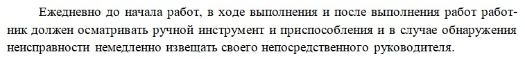
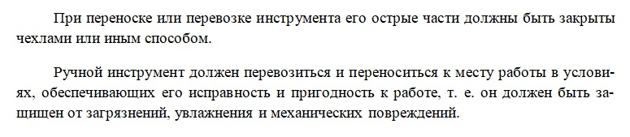

Требования ОТ при использовании оснастки, инструмента и приспособлений

Оставлять этот раздел целесообразно, если выполняются электромонтажные работы или активно используются электроинструменты. Логично отметить, что каждая дрель формально относится к категории электроприборов, однако перед добавлением текста убедитесь, что содержание соответствует вашим потребностям и не противоречит общей концепции проекта.
1. Общие требования к оснащению рабочих мест
Дается инструкция по соответствию используемого оборудования стандартам качества и требованиям техники безопасности. указываются действия перед началом работы с инструментом и механизмами.

2. Использование ручного инструмента
Включает руководство по ОТ, требования при переноске и перевозке, а также меры безопасности при работе с ручным инструментом при работе на высоте (при наличии таких работ).

3. Работа при монтаже электрических систем
Если работы касаются непосредственно электросистем, этот раздел существенно расширяется, охватывая дополнительные условия, такие как особенности монтажа внутри действующих электростанций.
Данный раздел начинаем с порядка действий ответственного за производство работ и указываем порядок действий при начале производства работ. Он обязан ознакомить персонал с ППР и провести текущий инструктаж, в котором разъясняет следующие позиции:
- характер и безопасные методы выполнения работ
- порядок прохода к рабочему месту
- наличие опасных зон и открытых каналов и траншей, порядок ограждения рабочего места
- наличие действующих электроустановок, наличие вывешенных знаков по ТБ
- порядок заезда автомашин в монтажную зону, места разгрузки оборудования и материалов
- порядок работы с автокраном, мостовым краном, автовышкой, гидроподъемником
- места и порядок подключения электросварочного трансформатора, рабочего освещения, электроинструмента; место работы газоэлектросварщика
- места установки пожарного инвентаря
- месторасположение телефона и порядок вызова пожарной команды, скорой медицинской помощи, начальника монтажного участка или управления
В целях пожарной безопасности матер (прораб) сообщает в пожарную охрану о начале работ. Все работники проходят внеплановый инструктаж и инструктаж по пожарной безопасности.
Давайте потренируемся. Определите, какие параметры необходимо проверить при работе с электроинструментом. Указанные данные также необходимо отразить в этом разделе ППР.